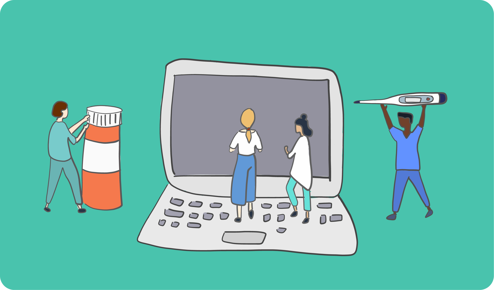
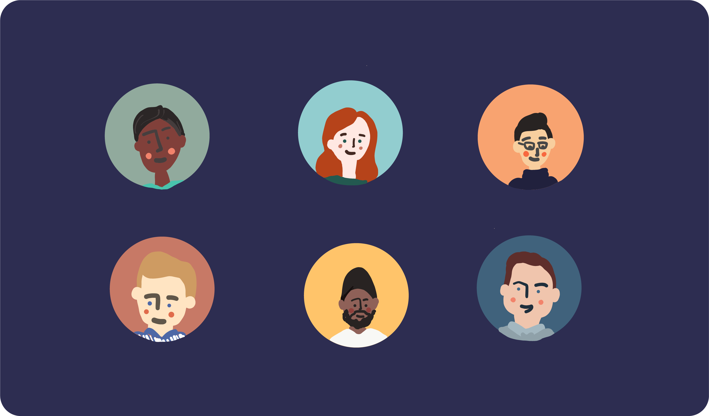
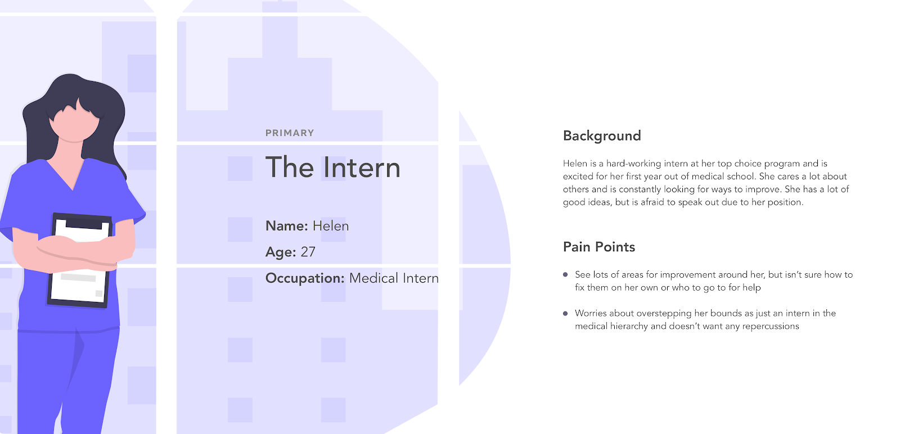
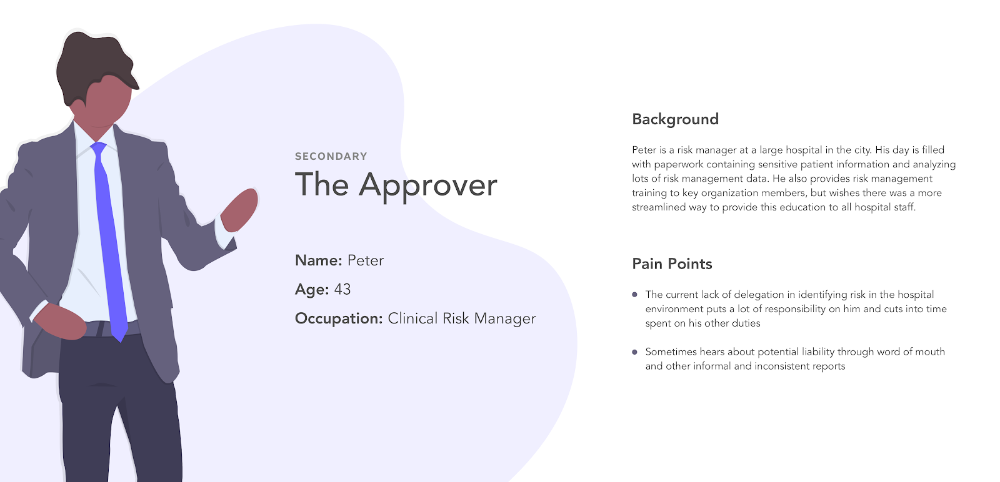
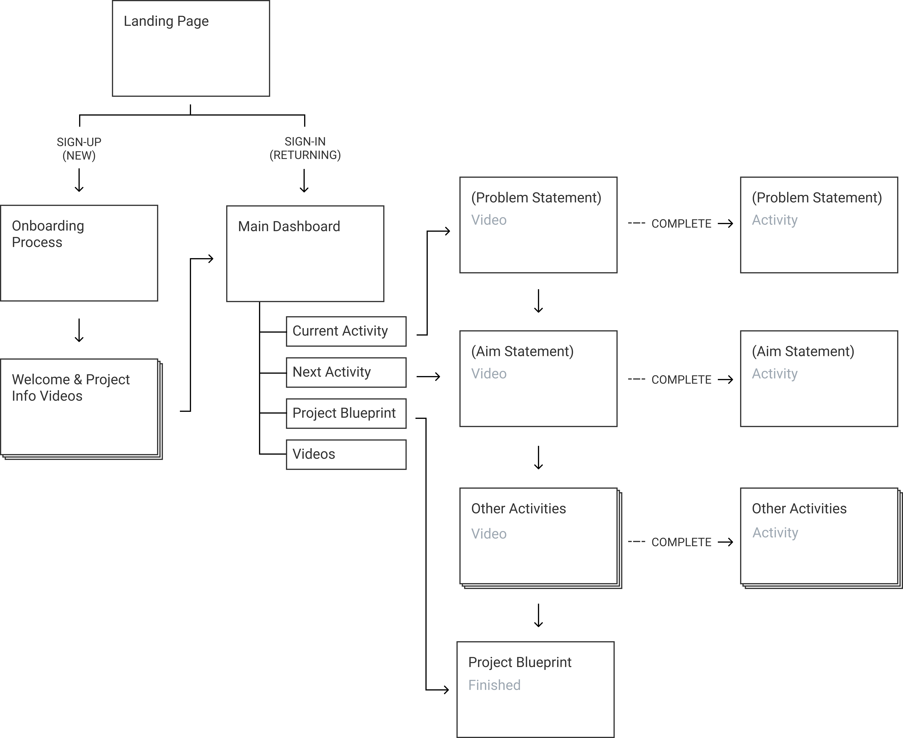
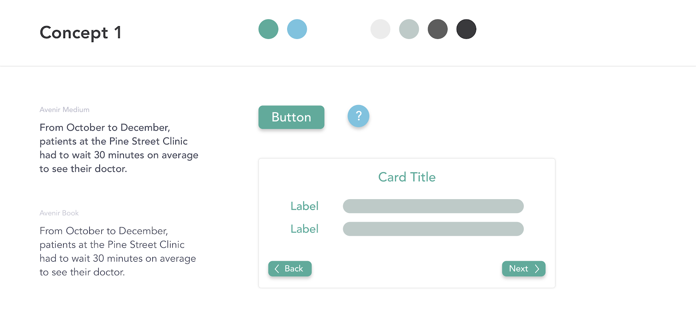
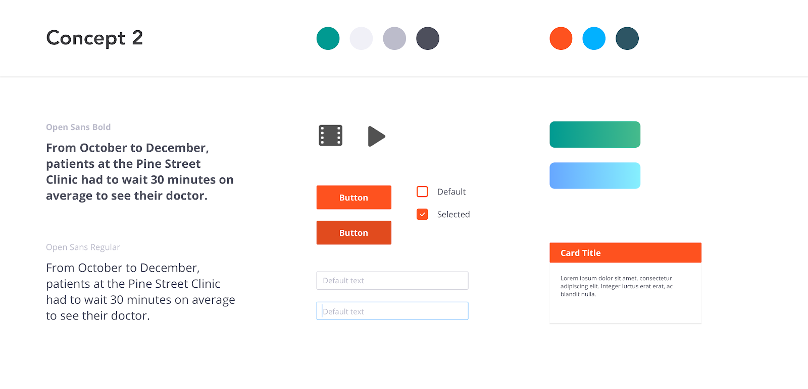
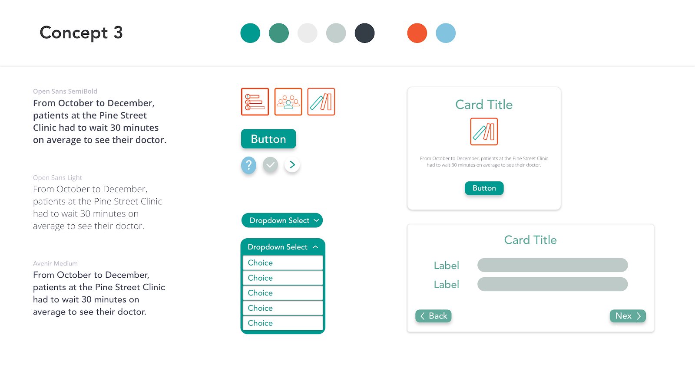

Role: UX/UI Designer for Duke Cancer Institute
Collaborators: Jeremy Chen
How might we promote positive change among large organizations by using technology to increase efficiency and education?
Hierarchies and corporate policies in large organizations strongly dissuade micro-innovation. In addition, people simply just don’t have time to learn all the information to enact quality improvement. We want to level the playing field to allow anyone with an idea impact positive change in their workplace.
The final product is a task-oriented web application that can help anyone fix problems they see in their workspace in a consistent and accessible manner. Workers can interact with the platform’s videos and activities to ultimately complete a project proposal form and submit it directly to the appropriate department.
Quality improvement (QI) consists of systematic and continuous actions that lead to measurable improvement and is an integral component to delivering high-quality healthcare.
However, QI is challenging, and with mounting day-to-day duties, healthcare workers struggle to find the time to learn proper skills to successfully affect change in their workplace.
Duke Cancer Institute works closely with Duke University hospital system in both research as well as project initiatives. BiteSizeQI was created to teach and foster micro-innovation within large organizations, such as Duke hospital, which promotes small and positive changes. The best ideas don’t always come from the top and, when given the right tools, all staff can drive meaningful change. I worked as a UI/UX designer with a team of quality improvement experts, clinicians, programmers and researchers at Duke Cancer Institute to create BiteSize QI.
We actually joined in the middle of the project, so interest for Bitesize QI was already high, initial research was done, and an MVP had already been created. However, this prototype was basically just a series of videos (think required company on-boarding videos!) to watch and then a long proposal form to fill out afterwards.
Our job was to evaluate the specific needs of various users, redesign the information architecture, convey key ideas in initial mockups, execute high-fidelity designs, and ultimately design a functional experience.
Bitesize QI needed a redesigned user experience that would save time and streamline the purpose of the tool.
These are the key points we established were needed to accomplish this goal:
1. Navigation: Implement a seamless navigation system that demonstrates progress indication and how to jump back in
2. Experience: Create an intuitive web experience that eliminates unnecessary steps and is supported by smooth interactions
3. Learning: Highlight essential features through contextual help that improves understanding of the product
Looking at the initial research, we separated user types into two categories: Primary users, like employees who would benefit directly but aren’t actively engaged in quality improvement decisions. Secondary users, like management staff who ultimately make these decisions, but aren’t well informed or have the time to do it well. Using this information, we developed user personas.
 We restructured the information architecture centered around a dashboard navigation that walks the users through step-by-step in order to minimize attention loss as well as information loss. In order to move onto the next video and lesson, you need to complete the activity, which also self populates the blueprint.
We started out with a few visual concepts and followed up during a review with the rest of the team. A lot of ideas were scrapped and I had to give up on gradients :( One of the most important skills to learn as a designer is how to move on from your designs and it’s definitely something i’m still working on. Based on a comment from a shareholder, we settled on the concept three that had a clean feel and pops of color to help keep attention on the tasks.
"The tool should have a professional/corporate approach while integrating the colorful and cartoonish nature of the videos.”
  BiteSize QI is a task-oriented web-based application that helps users identify a problem or deficiency in their workplace, and then walks the user through the fundamentals of quality improvement to help fix the problem.
You can also choose to poke around the prototype for yourself!
BiteSizeQI is currently being used as the primary mode of quality improvement at Duke University Hospital, which is home to over 300 physicians and researchers. It is also being implemented in several neighboring healthcare systems as well as local businesses. We've received positive feedback regarding the ease and intuitive nature of the web-app from several users and I actually worked on another app with Duke Cancer Institute the following semester!